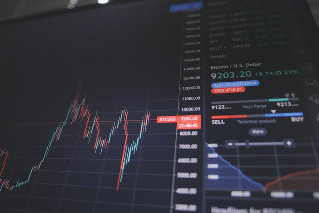

FIRE para Argentinos en los Países Bajos
Hola!
Mi idea con este post es compartir un poco la información que he recolectado y tirarte la información necesaria para arrancar sin tener que pensar mucho.
El tema inversiones es algo que no me atrae, así que estoy tratando de resolverlo efectivamente, para no tener que pensar en eso en el futuro.
ATENCIÓN
No me dedico a esto, y tampoco me gusta, así que no te puedo dar ninguna garantía de nada. Tomalo como una introducción al tema.
Cualquier duda, aporte o corrección son bienvenidos, hay una sección de comentarios al final o podes contactarme en twitter.
Introducción
"Financial Independence, Retire Early" es un movimiento cuyo objetivo es acumular bienes, hasta poder vivir de los ingresos pasivos (passive income) que estos generan e ir vendiendo los bines despacio. La idea es maximizar los ahorros, reducir los gastos y encontrar distintas formas de aumentar los ingresos.
Se teoriza que cuanto más ahorres de tu salario, más rápido te vas a poder retirar.
Esto no se trata de hacerse rico al instante, sino retirarse temprano, es decir, en menos tiempo de lo que se llega a una pensión.
Tampoco se trata de tener una tonelada de plata, sino que tus bienes produzcan más o menos los gastos que generás ahora.
Por tirar un número, yo diría que se tarda en promedio, 20 años; esto es mucho menos que la pensión. Esto varía dependiendo de tu situación.
Mas allá de eso, es un gran complemento a lo que será tu pensión y es mejor que tener tu dinero parado.
Podes leer más en el faq de /r/financialindependance.
Asegurate de no tener deudas y tener un colchoncito de dinero, por lo menos para poder vivir por 6 meses, antes de empezar.
Inversiones
Yo me voy a enfocar en dónde invertir.
En general, los argentinos en los Países Bajos tienen un salario que les permite ahorrar. Pero dada nuestra historia, (o por lo menos yo) no sabemos qué se puede hacer con los ahorros, además de tenerlos en la cuenta.
Entonces... dónde hay que invertir? En el stock market. Sí, acciones.
El stock market tiene el margen de retorno más alto (~7.5% cuenta la leyenda), mejor que real estate, y otros [0], y el riesgo lo controlamos invirtiendo de la forma controlada, y a largo plazo que se explica en este post. El canadiense Ben Felix explica, por ejemplo, el costo asociado a comprar un hogar en este video. Y en el libro Simple path to wealth se expande mucho sobre el tema de index funds, muy recomendado.

Pero no vamos a invertir de la manera que uno piensa en acciones, teniendo que mirar todos los días la pantallita del celular, eso no por favor! Ya veremos más adelante.
Cuánto necesito para retirarme
El cálculo es 25 veces tus gastos anuales [1]
Ejemplos:
- Utilizo €40k anuales para vivir. Entonces €40k * 25 = €1M
- Tengo €1M en ahorros. Entonces puedo gastar €40k anuales (4%).
Ese 4% aparece en muchos lugares mencionado.
Pueden leer "The Shockingly Simple Math Behind Early Retirement" para más info.
Dónde invierto
Básicamente invertiremos en ETFs o index funds, que son más o menos lo mismo, a largo plazo no importa mucho la diferencia.
Los index funds son un conjunto de acciones de muchas empresas.
Por los '70s, un tal John C. Bogle dijo que había que armar un index que imitara la performance del mercado en general a largo plazo. Si el mercado en un período largo de tiempo genera 10% de interés, eso es a lo que apuntamos. Dijo que el mercado siempre está creciendo. Fundó entonces The Vanguard Group, en la que los dueños son los mismos clientes, es decir, si tenés acciones del index sos en parte dueño.
Bogle estaba en contra de la especulación, que es cortoplacista y se enfoca en el precio de las acciones. En cambio, a largo plazo obtenemos una ganancia en base al negocio en sí mismo, y la gente que lo saca adelante.
Cómo imitó al mercado? Seleccionando un conjunto de muchas empresas. Blog entonces lanzó su primer index fund atado al S&P500, que son las mejores 500 empresas americanas.
El resto es historia.
Hoy en día hay muchísimos tipos de fondos. A mi me gustan los ESG que son fondos sustentables. Es interesante que el mismo dinero que nos va a dar de comer puede tener un impacto (positivo o negativo) en el mundo.
Cómo invertir
Estando en los Países Bajos es muy fácil, puede ser a través de la app del banco, o usando Trading 212 (T212). DeGiro no la recomiendo, porque me pedía un número fiscal que no tengo y no pude activar mi cuenta.
En T212 te van a pedir una proof of address, que puede ser la boleta del agua.
En teoría, ellos te abren una cuenta que es tuya, y no la pueden tocar, esto está protegido por leyes de la Unión Europea. A mi igual me cuesta confiar en esas apps.
Si te vas a abrir una cuenta en T212, usa mi link de referencia que nos dan una acción de hasta €100 a cada uno.
Dependiendo la plataforma que elijas, vas a tener un abanico de ofertas diferentes, y sus costos varían. Pero el tema de costos es despreciable, así que no importa mucho.
A continuación, dejo una lista que la podes usar así como está, dependiendo de tu plataforma:
| Plataforma | Index Fund |
|---|---|
| T212 | 100% VWRL FTSE All-World Index (IE00B3RBWM25) |
| ING Zelf op de beurs | 88% NT World MSCI World Custom ESG Index (NL0011225305) + 12% NT EM MSCI Emerging Markets Custom ESG Index (NL0011515424) |
| ABN Amro Zelf Beleggen Basis | 88% NT World MSCI World Custom ESG Index (NL0011225305) + 12% NT EM MSCI Emerging Markets Custom ESG Index (NL0011515424) |
| Rabobank Zelf Beleggen | 88% NT World MSCI World Custom ESG Index (NL0011225305) + 12% NT EM MSCI Emerging Markets Custom ESG Index (NL0011515424) |
La plataforma que elijas, la buscás en Google, y te va a llevar a dónde hacer click para configurar o crear una cuenta.
Habrás notado que para los bancos es el mismo fund the Northern Trust (NT), esto es así, porque están registrados en los Países Bajos, y no se qué mambo hay que terminamos pagando menos impuestos. (Actualizado 2021-03-22).
Además son ESG, que significa "Environmental, social and corporate governance" y eso es genial.
T212 no tiene disponibles los fondos de NT, pero los de Vanguard son los más recomendados en la mayor parte del mundo y son buenos. No sé si tienen ESG.
El porcentaje que aparece es cuánto hay que invertir en cada uno. Si vas a poner €100, entonces €88 van para World Custom y €12 para Emerging Market.
Todos los meses separá una parte de tu salario, y volvés a comprar en el mismo fund.
Para ver costos, cuánto obtendremos de retorno, y más información, un holandés hizo la web indexfondsenvergelijken.nl, que es genial.
Impuestos
Vas a tener que pagar impuestos por todos tus bienes en Holanda, de eso olvidate y mejor no luchar en contra.
Tus assets los vas a tener que reportar. Estés usando el banco o una plataforma, todos los años, en diciembre, te van a mandar un reporte con el valor de tus inversiones hasta ese momento. Ese valor es el que vas a tener que ingresar en la declaración jurada de ese año, en la parte de wealth tax (box 3). Capaz te dan algún beneficio por comprar los NT por ejemplo, pero todavía no sé bien cómo funciona, por el momento, solo se que hay algún tipo de beneficio
Los primeros €30k si sos soltero o €60k para parejas, son libres de impuesto. Te van a cobrar impuestos solamente sobre el monto que supere ese limite.
Si vos tenes €75k, te van a cobrar impuestos sobre €15k solamente.
Esta es la tablita del 2019
| Braket | Impuesto | Ejemplo |
|---|---|---|
| €0-€71.650 | 0.58% | €50.000 -> €290 |
| €71.651-989.736 | 1.34% | €300.000 -> €4.020 |
| > €989.737 | 1.68% | €1.100.000 -> €18.480 |
Obtener el dinero de las inversiones
Los fondos de inversión, bonos, stock, y otros, suelen producir dividendos, que es la distribución de ganancias hacia los shareholders.
Como vos vas a ser uno, te va a llegar esa plata; en general te la depositan en la plataforma que uses.
La idea es que una vez que llegás a tu objetivo, vivas de los dividendos, pero a veces también vas a tener que vender una partecita.
Digamos que tenés que sacar 4% de tu portfolio por año. Si los dividendos te dan 2.5%, vas a tener q vender un 1.5%. Pero no importa, porque ese 1.5% lo recuperarías ese mismo año en teoría.
En los Países Bajos, los fondos de inversión, están obligados a pagarte los dividendos al menos una vez por año, durante los primeros 8 meses del año.
Northern Trust fund, por ejemplo, los suele pagar en febrero.
No vivís en Holanda
Si estas en USA lee el libro Simple path to Wealth que te va a guiar.
Si estas en otro país de Europa podes pedir consejo en r/EuropeFIRE.
Pero el principio es el mismo.
Resumen
- Abrite una cuenta de inversiones en tu banco o app favorita.
- Invertí en Index Funds (Northern Trust o Vanguard).
- Hacelo un hábito y olvidate del tema, no importa si el mercado cae, NO VENDAS.
Research pendiente
- 30% ruling no necesita declarar ahorros e inversiones? Pareciera que no
- Invertir en stocks "green" aumenta nuestro máximo a €50k?
- Cómo se hace el rebalance anual?
Actualizaciones
2021-03-22
- Un amigo me confirmó que si tenes el 30% ruling no pagas impuestos en el BOX 3 por inversiones o savings, luego de hablar con el ABN.
- Es posible dejar la cuenta abierta del banco si te vas a vivir a otro país, es decir que las inversiones las podes seguir manejando por ahí.
- Beneficio de tener index fund registrado en los Países Bajos:
The Northern Trust indexfunds are domiciled in the Netherlands and thus avoid dividend leakage which increases their returns about 0,25% per year as compared with a similar indexfund or ETF domiciled in Ireland or Luxembourg (as most in Europe are). Dividend leakage means you'd pay capital gains taxes twice on the same gains. A 0,25% difference isn't the end of the world if you take into account you do pay service fees at ABN AMRO and Rabobank while for a similar ETF at DeGiro you wouldn't pay a service fee.
2022-01-14
- Hasta ahora mi banco reporta un crecimiento del 20% desde mediados del 2020, manteniendo la misma estrategia.
Recursos
Photo by Nick Chong on Unsplash
Hey, hola 👋
Si te interesa lo que escribo podes seguirme en twitter.